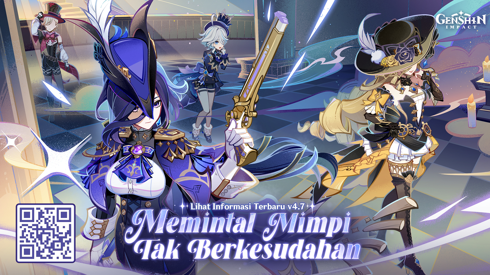

<div class="container">
  <app-sidebar></app-sidebar>
  <div class="content">
    <h1>Image Creator with Vertex Imagen</h1>
    <div class="conversation">
      <!--  -->
      <div *ngIf="imageSrc">
        
      </div>
      <div *ngIf="!imageSrc">
        <p>No image generated yet.</p>
      </div>
    </div>
    <div class="send-container">
      <div class="message">
        <input type="text" class="mt-1 block w-full px-3 py-2 bg-white border border-slate-300 rounded-md text-sm shadow-sm placeholder-slate-400 focus:outline-none focus:border-sky-500 focus:ring-1 focus:ring-sky-500 disabled:bg-slate-50 disabled:text-slate-500 disabled:border-slate-200 disabled:shadow-none invalid:border-pink-500 invalid:text-pink-600 focus:invalid:border-pink-500 focus:invalid:ring-pink-500" [(ngModel)]="prompt" placeholder="Enter prompt">
      </div>
      <button (click)="generateVertexImages()">Generate Image</button>
    </div>
  </div>
</div>
